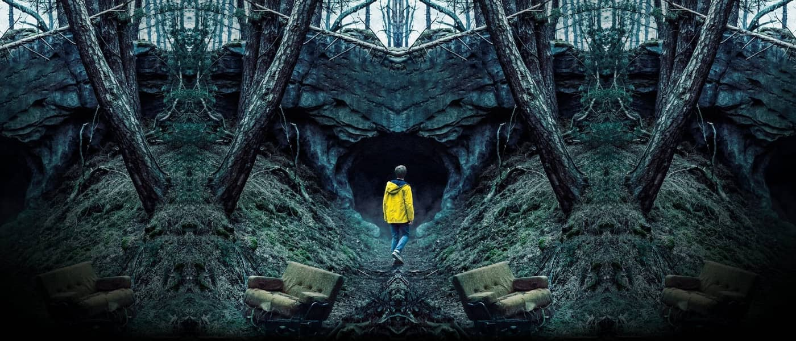

Dark Sinopsis
En la ciudad de Winden comienzan a desaparecer niños, sacando a la luz las relaciones fracturadas, vidas dobles y el pasado oscuro de cuatro familias que viven allí, y revelando un misterio que abarca cuatro generaciones. La historia comienza en 2019, pero se extiende a través del viaje en el tiempo para incluir argumentos en 1986 y 1953, a medida que ciertos personajes de las familias principales de la serie se dan cuenta de la existencia de un agujero de gusano en las cuevas situadas debajo de la central nuclear local, dirigida por la influyente familia Tiedemann. Durante la primera temporada, comienzan a revelarse secretos sobre las familias Kahnwald, Nielsen, Doppler y Tiedemann, y sus vidas comienzan a desmoronarse a medida que los lazos entre los niños desaparecidos y las historias de la ciudad y sus ciudadanos se hacen evidentes. En la segunda temporada continúan los intentos de las familias entrelazadas de reunirse con sus seres queridos desaparecidos, varios meses después del final de la primera temporada, en 2020, 1987 y 1954, respectivamente. Historias adicionales ambientadas en 2053 y 1921 aportan nuevos aspectos a los misterios, y se explora la comunidad secreta Sic Mundus, una fuerza importante en una batalla subyacente por el destino final de la gente de Winden, a medida que la temporada avanza hacia el apocalipsis: la destrucción de Winden y la muerte de muchos de sus habitantes. La tercera temporada sigue los eventos que suceden inmediatamente después del apocalipsis en Winden, las historias del pasado y futuro, y la introducción de otro mundo, desvelándose el origen del bucle. También hay historias adicionales ambientadas en 1888.
La primera temporada tiene lugar principalmente en 2019, pero se expande para incluir historias ambientadas en 1986, 1953 y, en la escena final de la temporada, 2052, con varios personajes interpretados en varias edades por múltiples actores. La segunda temporada tiene lugar varios meses después de la primera, describiendo las historias iniciales en 2020, 1987 y 1954, respectivamente, mientras continúa la historia en 2053 y agrega una quinta historia, establecida en 1921.